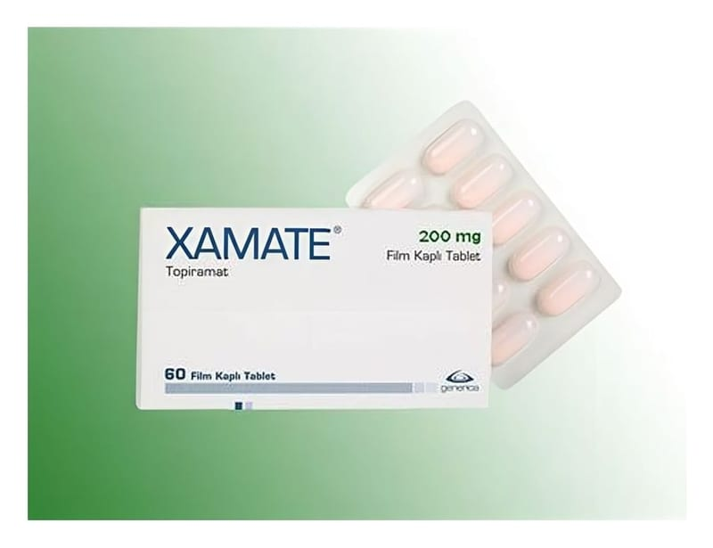

Xamate 200 mg Film Kaplı Tablet, 60 Adet

Ne için kullanılır
KT · Bölüm 1XAMATE 200 mg Film Kaplı Tablet, koyu somon renkli, oblong, bikonveks film kaplı tabletler halindedir. Her kutuda 60 tablet bulunmaktadır. XAMATE, etkin madde olarak antiepileptik (sara hastalığına karşı kullanılan) ilaç grubuna dahil olan topiramat içerir. XAMATE, aşağıdaki durumların tedavisinde kullanılır: - Sara (epilepsi) hastalığının tedavisinde ✓ Tek başına: Erişkinler ve 6 yaşından büyük çocuklardaki sara nöbetlerinde,
✓ Diğer sara ilaçlarıyla birlikte: Erişkinler ve 2 yaşından büyük çocuklardaki sara nöbetlerinde - Erişkinlerdeki migren ataklarının önlenmesinde XAMATE doktorunuz tarafından bu durumlarda tek başına ya da diğer ilaçlara ek olarak reçete edilmiş olabilir. XAMATE, sara hastalığındaki nöbetleri ve migren ataklarını beyindeki sinirler ve kimyasalları etkileyerek önlenmektedir. XAMATE doktorunuz tarafından başka bir nedenle de size reçete edilmiş olabilir. Bu ilacın size niye reçete edildiği konusunda bir sorunuz olursa, bu konuyu doktorunuza sorunuz.